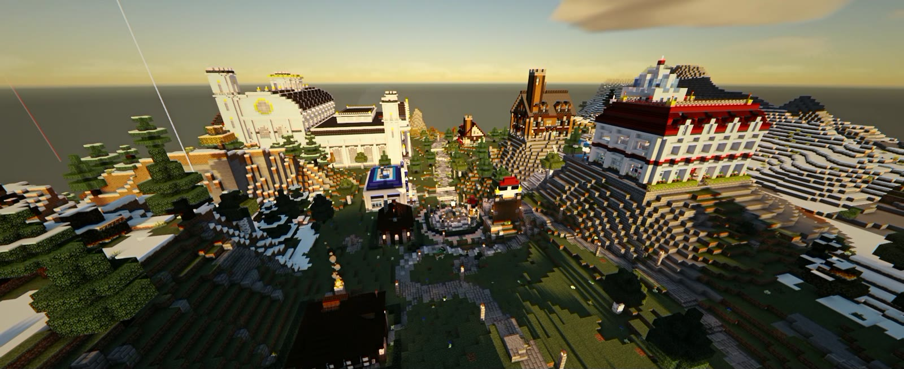

아침
모드팩 받기지방을 고르면 그 지방의 시간으로 하늘이 바뀌어요. 사진은 모두 서버 월드에서 그대로 찍었어요.


테스트 서버에서 친구들이 보내 준 제보로 다듬고, 그 위에 새 이야기를 얹었어요.

v15 월드에서 쉐이더 「리그 호라이즌」을 켜고 그대로 찍었어요. 음악은 리그 오리지널 「정상에 서다」예요.
네 단계면 새싹마을에 도착해요. 예전 버전 프로필에 덮어쓰지 말고 새 프로필로 가져와 주세요.
서버 주소는 디스코드 공지를 확인해 주세요.
멀티플레이 → 서버 추가 → 붙여넣기
마을, 도로, 체육관, 리그, 전설의 제단까지, 서버에서 흐르는 곡을 미리 들어 보세요.
곡을 고르면 여기서 재생돼요.